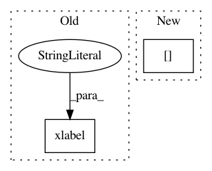

2e19f878707e04da7d9a4ccbe0cceb515b433124,dragonn/vis/__init__.py,,plot_ism,#,12
Before Change
if vmax==None:
vmax=np.amax(ism_mat)
plt.imshow(ism_mat.T,extent=extent,vmin=vmin, vmax=vmax)
plt.xlabel("Sequence base")
plt.ylabel("ISM Score")
plt.title(title)
plt.yticks(np.arange(50,100*ism_mat.shape[1],100),("A","C","G","T"))
plt.set_cmap("RdBu")
After Change
axes[1].imshow(ism_mat.T,extent=extent,vmin=ymin, vmax=ymax, interpolation="nearest",aspect="auto")
axes[1].set_xlabel("Sequence base")
axes[1].set_ylabel("ISM Score")
axes[1].set_title(title)
axes[1].set_yticks(np.arange(50,100*ism_mat.shape[1],100),("A","C","G","T"))
plt.set_cmap("RdBu")
plt.tight_layout()
In pattern: SUPERPATTERN
Frequency: 3
Non-data size: 2
Instances
Project Name: kundajelab/dragonn
Commit Name: 2e19f878707e04da7d9a4ccbe0cceb515b433124
Time: 2019-04-30
Author: annashcherbina@gmail.com
File Name: dragonn/vis/__init__.py
Class Name:
Method Name: plot_ism
Project Name: scipy-lectures/scipy-lecture-notes
Commit Name: f47b16d2de5ca35c034cb53a70fbbe330ea43f97
Time: 2012-08-10
Author: gael.varoquaux@normalesup.org
File Name: advanced/mathematical_optimization/examples/plot_gradient_descent.py
Class Name:
Method Name:
Project Name: githubharald/SimpleHTR
Commit Name: b2ac69ac570c5bf82ab78a094d107b2645952874
Time: 2019-01-04
Author: harald_scheidl@hotmail.com
File Name: src/analyze.py
Class Name:
Method Name: showResults